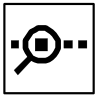

2.4.2 Tools bar
Verify/Compile : Checks your code for errors.
Upload to I/O Board : Uploads your code to the Arduino I/O board (POP-168 module). Make sure to save or verify your sketch before uploading it.
New : Creates a new sketch.
Open : Presents a menu of all the sketches in your sketchbook.
Save : Saves your sketch.

Serial Monitor : Open the Serial Monitor window to get and show data via USB port of Arduino hardware.Original manual, page 20